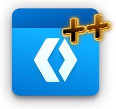

Первый абзац: жирный, курсив, подчёркнутый,
зачёркнутый и код() в одну строку.
Вложенные начертания: жирный жирный курсив снова жирный.
Перенос строки
внутри абзаца.
Цитата: сдвиг влево и вторичный цвет, без фона и рамки.
моноширинно и пробелы
сохранены как есть
Ссылка на пример и якорная сноска под обработчик onLink.
Картинка

в строке; формулы: H2O и E = mc2.Цвет шестнадцатеричный, цвет по имени, другая гарнитура, крупнее и мельче.
Сущности: & < > «ёлочки», тире — и многоточие… Числовые: Буквица.